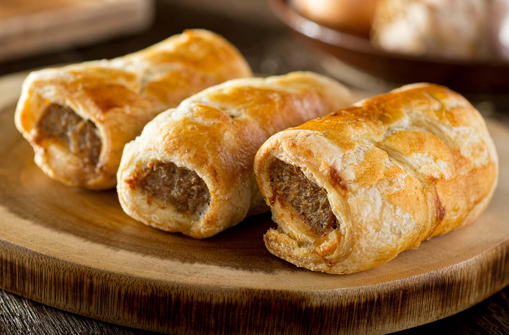

Sausage Roll

Sausage Roll Sausage Roll Sausage Roll
Rolling into your tummy is a taste thats oh so yummy. Pastry filled with meat draws a line that crowds the street.
Rolling out the ingredients
- 1 (17.3 ounce) package frozen puff pastry sheets, thawed
- ¼ cup Dijon mustard
- 1 (16 ounce) package pork sausage meat or ground pork
- 1 large egg, beaten
Steps
- Preheat the oven to 400 degrees F (200 degrees C).
- Unfold puff pastry sheets. Cut along the fold lines of each sheet to form 6 equal squares for a total of 12 squares. Brush each square with mustard.
- Divide sausage into 12 equal pieces and roll into small logs. Place one log onto each square. Roll dough around sausage and lightly brush dough with beaten egg to seal. Place rolls onto an ungreased baking sheet. Brush the tops with remaining beaten egg.
- Bake in the preheated oven for 10 minutes. Check to ensure they aren't burning, then continue to bake until puffed and golden, about 10 more minutes. An instant-read thermometer inserted into the center of a roll should read at least 160 degrees F (70 degrees C).